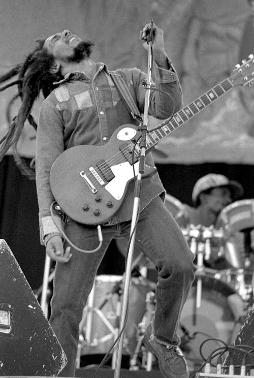

TIMELINE
1945
Born in St.Anne Parish, Jamaica. His parents were Norval Marley and Cedella Booker. His father was a Jamaican of English descent. His mother was a black teenager. He lived his early life in a village called Nine Miles.
1950's
He moved into the Trench Town, one of the poorest neighborhoods in the city.
1962
Local producer Leslie Kong released Bob's first single "judge not" did not farewell as a solo artist.
1963
He joined the group Wailing Wailers, members which consisted of Livingston an McIntosh.
1964
New members Junior Braithwaite, Beverly Kelso and Cherry Smith had joined. The groups first single "simmer down" to top the music charts.
1965-1966
The group disbanded due to financial issues. Marley went to the United States where his mother was now living. However, before he left, he married Rita Anderson.
1966
After 8months into his marriage.He reunited with Livingston and McIntosh to form the Wailers. Around this time, Marley was exploring his spiritual side and developing a growing interest in the Rastafarian movement.
1960's
For a time in the late 1960s, Marley worked with pop singer Johnny Nash. Nash scored a worldwide hit with Marley's song "Stir It Up." The Wailers also worked with producer Lee Perry during this era; some of their successful songs together were "Trench Town Rock," "Soul Rebel" and "Four Hundred Years.".
1970
bassist Aston "Family Man" Barrett and his brother, drummer Carlton "Carlie" Barrett. The following year, Marley worked on a movie soundtrack in Sweden with Johnny Nash.
1972
The Wailers got their big break in 1972 when they landed a contract with Island Records, founded by Chris Blackwell. For the first time, the group hit the studios to record a full album. The result was the critically acclaimed Catch a Fire.
1973
the Wailers toured Britain and the United States, performing as an opening act for both Bruce Springsteen and Sly & the Family Stone. They released their second album, Burnin', featuring the hit song "I Shot the Sheriff."
1974
Rock legend Eric Clapton released a cover of the song, and it became a No. 1 hit in the United States.
1975
Later on they toured with I-Threes, a female group whose members included Marcia Griffiths, Judy Mowatt and Marley's wife, Rita. Now called Bob Marley & The Wailers, the group toured extensively and helped increase reggae's popularity abroad. In Britain in 1975, they scored their first Top 40 hit with "No Woman, No Cry."
1976
He made the U.S. music charts with the album Rastaman Vibration. One track stands out as an expression of his devotion to his faith and his interest in political change: "War." The song's lyrics were taken from a speech by Haile Selassie, the 20th century Ethiopian emperor. Two days before a planned concert in Kingston's National Heroes Park. One bullet struck Marley in the sternum and the bicep, and another hit his wife, Rita, in the head. Fortunately, the Marleys were not severely injured.
1977
Marley had a health scare in 1977. He sought treatment in July of that year on a toe he had injured earlier that year. After discovering cancerous cells in his toe, doctors suggested amputation. Marley refused to have the surgery.
1981
After going through unconventional treatment in Germany and was subsequently able to fight off the cancer for months. It soon became clear that Marley didn't have much longer to live, however, so the musician set out to return to his beloved Jamaica one last time. Sadly, he would not manage to complete the journey, dying in Miami, Florida.
| IN A NUTSHELL  | |
|---|---|
| Born | Robert Nesta Marley born in St.Anne Parish, Jamaica 1945. |
| Died |
May 11, 1981 (aged 35) Florida, Miami, U.S. |
| Occupation | Singer, Song writer |
| Parents | Norval Sinclair Marley (father) and Cedella Booker(mother) |
| Children | with Rita; Sharon,Cedella,David,Stephen with Janet Hunt; Rohan with Lucy Pounder; Julian with Anita Belnavis; Ky-Mani with Cindy Breakspear; Damien |
| Cause of death |
Melanoma (skin cancer) |